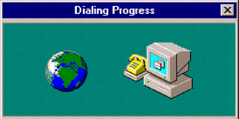

HELLO THERE WEB TRAVELER!
You've stumbled upon a peaceful corner of the internet, free from pop-ups, cookies, and chaos.
Here, blinking text and MIDI music still rule. Grab a soda, sit back, and enjoy the gentle hum of cyberspace.
How Internet Pages Work
Web browsers load an HTML file from a server or pc that's hosting set files, which tells them how to show text, images, and layout.
Some add CSS for style or JavaScript for interaction. But here? It's mostely HTML baby.
Why This Page Works Everywhere?
- HTML 3 and 4 - Old but gold
- No fancy modern code
- No complicated JavaScript needed
- Works offline
- Loads instantly
It's like the late 90s all over again.
The Old Internet Experience
- Dial-up modems screeching their digital song
- Email that sounded like "You've Got Mail!"
- Guestbooks to sign and read
- IRC and AOL chatrooms full of strangers
- Webrings - a community before social media
- Pages full of animated GIFs and hit counters
This place is a tribute to that golden era - a little slower, a little weirder, and a whole lot more fun.
Just Vibes
This isn't just a page. It's a feeling. No ads. No tracking. Just vibes.
Feel free to stay awhile. The internet's not going anywhere... unless someone picks up the phone :)

